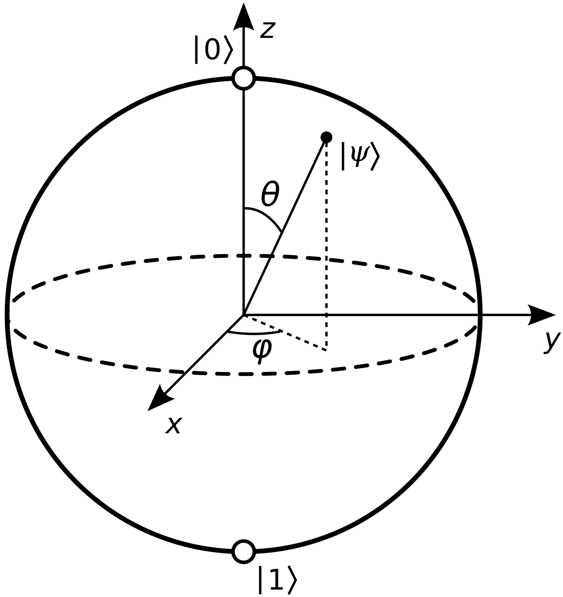

The Bloch sphere and rotations
Recall that the a complex number z can be written in polar coordinates as:
where r = |z| is a non-negative real number and \alpha is an angle in [0, 2\pi]. Consider, then a qubit in a state \lvert\psi\rangle = a\lvert0\rangle + b\lvert1\rangle and write a and b in polar coordinates as:
we also know that r_{1}^{2}+r_{2}^{2}=|a|^{1}+|b|^{2}=1 and, since 0\leq r_{1}, r_{2}\leq 1, there must exist a angle \theta in [0, \pi] such that \text{cos}(\theta/2) = r_{1} and \text{cos}(\theta/2) = r_{2}. By now, we have,
We can multiply \lvert\psi\rangle by e^{-i\alpha_{1}} to obtain the following:
where we have defined \phi = \alpha_{2} - \alpha_{1}. In this way, we can describe the state of any qubit with just two number \theta \in[0, \pi] and \phi \in [0, 2\pi] that we can interpret as a polar angle and an azimuthal angle, respectively.
This gives us a three-dimensional point to locates the state of the qubit on the surface of a sphere, called the Bloch sphere 
{kind=link}
In the Bloch sphere, \lvert0\rangle is mapped to the north pole and \lvert1\rangle to the South pole. In general, states that are orthogonal with repest to the inner prodcut are antipodal on the sphere. As we already know, the X gate takes \lvert0\rangle to \lvert1\rangle and \lvert1\rangle to \lvert0\rangle, but leaves \lvert+\rangle and \lvert-\rangle unchanged. This makes X gate acts like a rotation of \pi radians around the X axis of the Bloch sphere. Imagining you are looking in to a qubit with state \lvert\psi\rangle from the X axis, you wil see the qubits only rotate around the X axis. Therefore, for the X, Y, and Z axes we may define
In general form, for any one-qubit gate U there exists a unit vector r = (r_{x},r_{y},r_{z}) and the angle \theta such that
For instance, if we choose \theta = \pi and r = (1/\sqrt{2},0,1/\sqrt{2}) we can obtain the Hadamard gate,
More, the universal one-qubit gate used by IBM, is called the U-gate, which depends on three angles and is able to generate any other one-qubit gate,
These can be used in Chapter 9, Quantum Support Vector Machines, and Chapter 10, Quantum Neural Networks.